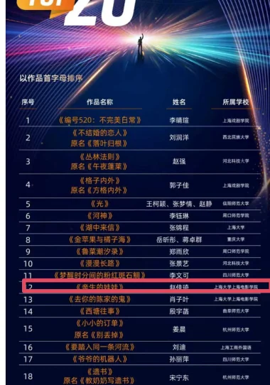

《亲生的娃娃》
类型：家庭、留守儿童、儿童
故事梗概
《亲生的娃娃》讲述了一个名叫小舟的男孩在怀疑自己是否被父母亲生所困扰的过程中，逐渐理解亲情本质的故事。
小舟生活在一个海边村庄，父母常年在外打工，他和听力不好的爷爷一起生活。一天，邻居女孩告诉他“你不是你爸妈亲生的”，这句话像一颗种子在他心中生根发芽。他先后向爷爷、邻居孙阿姨求证，孙阿姨半开玩笑地告诉他“你是从垃圾桶捡来的”，并提到了滴血认亲和亲子鉴定。
小舟信以为真，开始偷偷寻找证据。他翻找父母的房间，观察自己与家人的外貌差异，甚至尝试用针取血做滴血认亲试验，结果血水被不知情的爸爸喝掉。他还偷藏了父母的车票，试图获取他们的头发去做亲子鉴定。
在一次家庭冲突中，爸爸因找不到车票打了小舟，小舟愤而跑出家门，父母追出。在夜色中，小舟终于吐露心声：“为什么你们总是不在家？我经常很想你们。”父母也在这过程中理解了他的不安与渴望。
结尾处，爷爷悄悄拿出藏起的车票，原来他同样希望一家人多团聚几天，我们只注意到小舟是留守儿童却忘记了爷爷也是在家守望着盼着团圆的留守老人。故事在小舟与父母的和解中落下帷幕。
2.创作阐述
《亲生的娃娃》是一个关于怀疑、孤独与爱的故事，它以一名留守儿童的身世之谜为切口，探讨了亲情的本质并非血缘，而是陪伴与理解。
剧本的灵感来源于农村地区普遍存在的打工家庭现象，那些常年与祖辈生活在一起的孩子，往往会在某个瞬间产生我是不是亲生的这种看似荒唐却无比真实的疑问。小舟的怀疑，表面上是女孩一句玩笑话引发的连锁反应，实际上是他内心深处对父母长期缺席的不安与渴望的变形表达。他真正在意的不是生物学上的亲子关系，而是为什么你们总是不在我身边。因此，整部剧本的叙事动力并非解开一个悬疑谜题，而是陪伴小舟走过一场情感上的认亲之旅——他最终确认的，不是血液的融合，而是父母追逐他的脚步、夜色中的拥抱、以及那些琐碎而真实的回忆。
在人物塑造上，小舟是一个敏感、执拗又不失天真的孩子。他会在衣柜里翻找、扒开自己的眼睛对比照片、模仿父母的表情，这些细节呈现出孩子式的“取证逻辑”，既好笑又令人心疼。他不是一个被动等待答案的受害者，而是一个主动探索的小小冒险家，这种性格让他在后来的冲突中敢于跑出家门，也敢于在父母面前说出“我想去医院做亲子鉴定”这样稚拙又勇敢的话。爷爷作为他日常的陪伴者，看似沉默、耳背、只会微笑和做饭，却在结尾成为最大的情感转折点——那两张被藏起来的车票揭示了一个秘密：爷爷同样渴望一家人多团聚几天。他不仅是留守儿童身后的留守老人，更是这个家庭中另一个无声的思念者。
从现实关怀的角度看，《亲生的娃娃》没有刻意控诉社会问题，而是通过一个孩子的视角，温柔地呈现了打工家庭内部的复杂情感。邻居孙阿姨是好心却不够谨慎的善意谎言者，父母是迫于生计却仍深爱孩子的劳动者，爷爷是默默守护却又渴望团圆的老人。每一个人物都有其合理性，没有绝对的错误方，只有被距离拉开的思念。结尾处爷爷藏起车票的细节，更是将团聚的愿望推向了超越代际的层面——不是小舟一个人需要父母，而是整个家庭都需要彼此。
3.获奖证明

4.完整剧本
《亲生的娃娃》
场景一 日 外 山坡/路上
黄昏，山坡路上，一个男孩和一个女孩面对面。女孩看着男孩认真地说。
女孩
你不是你爸妈亲生的——真的，你不是亲生的。
男孩
你骗人。
女孩你爱信不信。
男孩嗫嚅着嘴唇，没等说出话，女孩转身离开，男孩在原地站了几秒后，飞快地飞奔回家。
场景二 日 外 院子门口
男孩爷爷正靠着藤椅挑种子（水稻种子）。
男孩从远处的路口跑回来，男孩跑得浑身是汗。在爷爷面前站定后，喘着粗气。
男孩
爷，我是爸妈亲生的吗？
爷爷微笑着看着孙子不说话（听不见）。
男孩凑到爷爷耳边喊。
男孩(超大声)
爷，我是我爸妈亲生的吗？！
爷爷
哦（摆摆手）， 明白了——男孩期待地看着爷爷。
爷爷
这种子肯定是生的，熟的种不出来。
男孩我是不是亲生的。爷爷微笑，摊手指指耳朵听不到。
男孩
(讽刺)
爷啊——你这个耳朵啊真是牛批。
爷爷给孙子脑袋一下。
爷爷起身走进院子去做饭。
男孩
我要吃西红柿炒鸡蛋。
爷爷
好。
场景三 日 内 爸妈房间
屋外爷爷炒菜的声音。
男孩钻进衣柜里找，扯出来衣服再一股脑塞进去。
男孩掀开床垫一角。
男孩踩着凳子去摸柜子上的相册。
拿下来一本落灰的结婚相册，男孩翻开，里面是爸妈结婚照。
男孩对着镜子模仿爸爸的神情呲牙咧嘴，又模仿妈妈高贵美丽的样子。
男孩看着照片，皱眉思考。摸摸爸妈照片上的眼睛然后发现自己的眼睛太小了，再扒开自己的眼睛。
爷爷
吃饭喽。
男孩抽出一张双人照，放进自己的口袋里，又迅速把相册放回去。
场景四 日 外 院子
爷爷和男孩吃饭。爷爷端着菜。
爷爷
吃吧，你点的，青瓜炒鸡蛋。男孩无奈地扒拉着嘴里的饭。观察、注意到爷爷的眼睛也很大。
男孩
爷啊，为啥你的眼睛和爸爸的都那么大，妈妈也是，怎么只有我的这么小。
爷爷
啥子？是想你爸妈了吧，他们上周来电话说端午就回来夏种。
男孩听了以后放下碗跑回房间，翻日历表，翻了一页后发现，明天就是芒种。
男孩(大声地)
你之前怎么没说啊？
爷爷微笑着给男孩夹菜。男孩郁闷的几口吃干净背上包就出门了。
场景五 日 外 山坡上/河边
黄昏，树上的大喜鹊叼着食回窝喂给小喜鹊。
男孩坐在河边/山坡上，看着课本，课本中间是爸妈的照片，左边是一篇文章。男孩把书本盖在脸上，开始背诵课文。
男孩
我从不肯妄弃了一张纸
总是留着——留着，
叠成一只一只很小的船儿，
从舟上抛下在海里。
有的被天风吹卷到舟中的窗里，有的被海浪打湿，沾在船头上。我仍是不灰心地每天叠着，
总希望有一只能流到我要它到的地方去。
父亲母亲，倘若你梦中看见一只很小的白船
儿，
不要惊讶它无端入梦。
这是你至爱的孩子含着泪叠的，
万水千山，求它载着他的爱和悲哀归去。男孩可以叠小船在河边（如果是在山上就叠纸飞机）
场景六 夜 外 村子大树下
傍晚，天空的蓝调时刻。
一个妇女（孙嬢嬢）正在院子门口树下剥花生。
男孩走过去后，孙嬢嬢递给他一把花生，把他拉在身边。
孙嬢嬢作业写完啦？
男孩
孙嬢嬢，你小时候认识我爸妈吗？
孙嬢嬢
那肯定的，我们是光屁股长大的啊。
男孩
那没有生我之前，你也认识他们。
孙嬢嬢是啊。
男孩挥手示意孙嬢嬢过来要说悄悄话，孙嬢嬢把头凑过去。
男孩
我不是我爸妈亲生的？
孙嬢嬢
(震惊地看他一眼憋笑)
男孩
到底是真的假的。
孙嬢嬢(假装认真)
谁这么讨厌，怎么能让你知道呢？
男孩所以，都是真的啊。
孙嬢嬢
唉，想当年一个特别冷的冬天，你爸去丢垃
圾，你在垃圾桶里哇哇哭，你爸就给你抱回家了。
男孩
原来真是这样，我是捡来的。
孙嬢嬢
哈哈哈哈哈哈，诶哟——你还真信啦？嬢嬢逗呢。
男孩
你不用安慰我，我早就感觉他们有问题了。
孙嬢嬢(继续笑)
你这孩子不禁逗啊。
男孩低头不讲话。
孙嬢嬢
你要不信，你去滴血认亲，再不行你去医院做亲子鉴定啊，它不会骗人。
男孩
什么是滴血认亲？
孙嬢嬢
你有看电视剧里头演嘞啊？把你和你爹妈嘞血滴滴在一个碗头，等哈哈儿要是融归一坨喽，就是亲嘞。
男孩那什么是亲子鉴定？
孙嬢嬢
亲子鉴定嘛，就是拿你们嘞头发去医院配对，配得上嘞就是亲生嘞！
男孩
(点头)
这保准吗？
孙嬢嬢
科学啊，科学是铁定不会错嘞学问——哎哟！我跟你扯这些搞哪样嘛？莫乱想喽，赶紧转回家！
男孩
你别告诉别人——拉钩。
孙嬢嬢和男孩拉钩。
男孩＋孙嬢嬢拉钩上吊一百年不许变。
场景七 夜 内 卧室
深夜，男孩和爷爷已经休息了，男孩睁开眼睛看着熟睡背对着他开始打呼噜的爷爷。
男孩从爷爷身上跨过去，面对面爷爷，用手去拉爷爷的手。
男孩
(掉眼泪)
就算他们不是我的亲爸妈，你也是我的亲爷爷，我舍不得你。
爷爷很大声地打呼噜。
男孩说完就开始掉眼泪。
场景八 日 内 房间
第二天一早男孩起床后，发现堂屋里有爸妈的行李，男孩知道是爸妈回来了，扭头盯着爸妈房间的门。
男孩回忆起孙嬢嬢的话，男孩走到厨房挖了一碗水。端着水到了爸妈房间。爸爸妈妈正躺在床上熟睡。一个黑色的挎包放在床头柜上。
男孩静悄悄地在地上爬着走，挪到床边以后，刚抬起头，爸爸打呼噜。
男孩被呼噜声吓的赶紧趴在地上，静置一会后男孩爬起来准备扎爸爸手指头，刚一下 针，爸爸哼唧一声翻了个身。
男孩趴下又爬起来后终于找到一个地方下了针，顺利出了一滴血，男孩用碗接过来，然后把碗放在床头柜上，扎自己一下，两滴血沉入水中。
男孩回想起孙嬢嬢的话：
孙嬢嬢
等哈哈儿要是融归一坨喽，就是亲嘞。
男孩回头看着熟睡的爸爸，把脸凑得很近，观察爸爸。这个时候爸爸突然张开眼睛，被男孩吓一跳。
爸爸
你个憨包！你啷个回事？！
男孩下意识用身体挡住水碗。
爸爸你躲哪样？
爸爸一把拉开男孩。看到水碗，直接端起来。
爸爸
嘿！晓得给你家爹送水嘞，会来事哦，刚好我口干得很！
爸爸拿起碗一口干了。男孩接过碗，碗里空空。
爸爸
等一哈儿和我们去地头干活，听到没得？男孩低着头端着碗。
场景九 日 外 田地
男孩低着头拎着水桶，男孩躲到父亲几步远的树荫底下。
男孩爸爸戴着帽子开始在地里耕地。
爸爸
过来！男孩走过去。
爸爸
倒一点
男孩按照父亲的话做，倒完以后又跑回树荫地下。爸爸耕好下一个坑以后，转身发现男孩又跑到树下去了。
爸爸
过来！
男孩跑过去到了一点，刚准备跑回去，被爸爸揪住衣服。
爸爸
不许动，就站在这儿。
男孩瞪着爸爸。
爸爸往前继续走刨下一个坑，示意男孩倒水。发现男孩还站在原地。
爸爸你杵在那干嘛？
男孩
你说得不许动，我就站在这儿!
爸爸
你咋个憨包兮兮嘞？这点事都搞不懂！我让你跟着我倒水。
男孩跟着爸爸，然后爸爸还没等刨坑就把水泼了，爸爸用手一挡，水洒了满地。
爸爸
诶呦——搞点事情恼火完，爹不像娘不像，天晓得你随哪边老祖宗？
男孩噘着嘴小声嘟哝。
男孩反正你也不是我爸。
爸爸
啥子？男孩赶紧摇摇头。
爸爸
搞快点喽，整完回家吃饭喽！
爸爸说完以后，发现天上太阳太大男孩脸晒得红红的，摘下帽子戴在男孩头上。
场景十 日 外 田间小路
黄昏夕阳西下，男孩父亲挑着锄头，男孩在后面戴着父亲的帽子拎着水桶，和父亲保持一段距离往家走。
场景十一 日 外 院子
院子门的门框分隔开两个场景，以门框为界限。
门框外爷爷坐在院子门口，男孩蜷着腿坐在爷爷旁边。
门框内扎着围裙的妈妈正在往桌上端饭，爸爸帮妈妈端菜。
妈妈
老爹，儿嘞吃饭喽——
场景十二 日 外 院子内
大家围桌吃饭。
爸爸给爷爷倒满酒， 自己也斟满，端起酒杯敬爸爸。
爸爸
老爹，多累你在屋头帮我们带娃娃喽，我和娟儿才得在外头安心赚钱嘞。
妈妈
(端起酒杯)
是啊，平常你也自家顾好身体，平该花花，我们还能赚。
爷爷微笑，端起酒杯。大家干杯。
妈妈注意到一直低头的男孩。
妈妈
咋不吃菜呢？想吃什么？我再去给你做。
爸爸
别管他，白天干活的时候就给我找别扭，这孩子一点都没长大。
妈妈瞪了爸爸一眼，夹着盘子里的菜到男孩碗里。
男孩头低得快到地上去了。
爷爷
你们什么时候回去？买票了吗？
妈妈
后天就走，已经买票了。
爸爸爸你有啥事儿？
爷爷不说话继续微笑吃饭。
妈妈
军呐，我们后天就走了，你在家听爷爷话，上学好好读书，将来考大学。
爸爸
(不自然地咳嗽用眼神示意妈妈)
妈妈会心一笑，起身回屋子里，拿了一个你的书包送给男孩。
妈妈
你爸爸给你挑的，小军最喜欢的蓝颜色。
男孩拿着书包掩饰不住地开心。
妈妈
喜欢吗？男孩用力地点头。
妈妈
一会你给妈妈背你新学的课文好不好？
男孩
好——一家人继续吃饭。
场景十三 夜 内 房间
男孩和妈妈在院子里妈妈坐在藤椅上，男孩背着新书包，拿着书站在妈妈旁边，爸爸在房间里。
男孩
父亲母亲，倘若你梦中看见一只很小的白船儿，
不要惊讶它无端入梦。
这是你至爱的孩子含着泪叠的，
万水千山，求它载着他的爱和悲哀归去。男孩背课文的时候，妈妈一脸慈祥地看着他。
妈妈(鼓掌)
背得太好听了，快把书包放下吧，上学再背。男孩笑着摇头，反手摸了摸新书包。
男孩
妈妈，我有个问题想问你。
男孩爸爸走出来，刚好打断男孩的话。
爸爸
车票放哪里了？我看看时间提前订车出村子。
妈妈床头的包里。
男孩爸爸转身回去。
妈妈你想问什么？
男孩我是你们亲生的吗？
妈妈为什么问这个？
男孩爸爸从房间里冲出来边走边说。
爸爸
在这个包里吗？没有啊——
妈妈
不可能啊，我就放夹层里了你再找找。
爸爸抖着整个包，掉出来几个硬币。
妈妈(接过包)
就在这儿的，不会是掉了吧。爸爸注意到一旁的男孩缩着脖子不敢看他。
爸爸
是不是你？是你拿走的。
男孩摇头。
爸爸
大早上你在屋里鬼鬼祟祟，我就感觉不对劲，快说票在哪？！
妈妈来拦住爸爸拽着男孩领子的手。
妈妈你松开！
爸爸
小兔崽子，爸妈回来也不亲，犯别扭一天了！你找打！
男孩爸爸抄起院子里的扫把，打到男孩腿上。
爸爸
我和你妈辛辛苦苦在外面干活，你就想着调皮捣蛋不听话是不是，一点都不懂心疼我们
妈妈一直拦着。
男孩挨了一下子之后，愤怒地跑出去，跑得飞快，一下子就不见了影。妈妈大声地喊男孩名字
妈妈小军！小军！
妈妈气愤地转向爸爸指着爸爸
妈妈
你一回来就打孩子啊，他可是你亲儿子！妈妈转身跑出门去追男孩。
爸爸回屋子拽了一件衣服跑出去。
场景十四 夜 外 路上
男孩在前面疯狂地跑，一边跑一边掉眼泪。
后面爸妈一直喊着小军的名字追男孩。
妈妈
小军！手电光晃到男孩。
男孩加速继续往前跑，一着急摔了个踉跄。脚丫顺着拖鞋前面的口整个都落在地上。
爸爸妈妈追，妈妈跑不动了速度变慢，爸爸跑，男孩摔倒后着急地跑过去一把抱住男孩。
爸爸小军啊——
妈妈跑过来
爸爸妈妈从两边抱着男孩。
场景十五 夜 外 路上
妈妈打手电，暖黄色的光照亮幽黑的小路。
男孩趴在爸爸身上，身上盖着爸爸的衣服。
妈妈
你小时候特别聪明，特别早就会说话了，你就是不说还总是逗我们。
男孩
嗯？
妈妈
我教你说蜘蛛，你就说蛛——蜘——然后我说洋芋，你偏要说芋——杨。
男孩哈哈哈哈哈哈啊。
妈妈
你刚才是要跑去哪啊？
男孩
我今天捡了你们的头发，我要去医院做亲子鉴定。
爸爸谁告诉你的啊？
男孩
孙嬢嬢说这是不会出错的学问。
妈妈
胡说，妈妈的话才是不会出错的学问，小军就是我们亲生的娃娃。那你能不能告诉我为什么你觉得你不是我们的孩子？
男孩
孙嬢嬢说我是垃圾桶捡的。
爸爸
孙嬢嬢十句话八句是假的——
男孩
那为什么我的眼睛这么小，你们眼睛这么大？
妈妈
我像你这么大的时候眼睛也是黄豆粒大小，长大就好了。
男孩
为什么爸爸说我和你们都不像？
爸爸
爸爸喝多了，我一喝酒就说胡话。
男孩
那为什么你们总是不在家，别人的爸爸妈妈都在家陪着他们，只有你们不在。
爸爸妈妈沉默一瞬。
男孩我经常很想你们。
场景十六 夜 内 房间
爷爷点开房间的灯，把藏在枕头底下的两张车票拿了出来放回黑色的包里。爷爷深深地叹了口气。
——完——